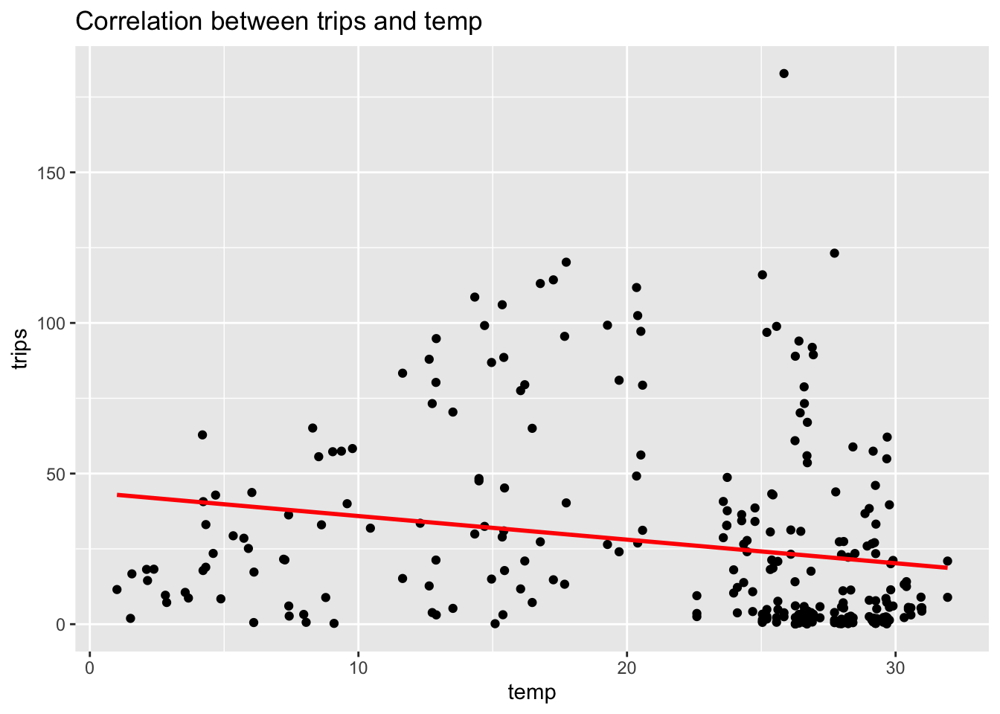
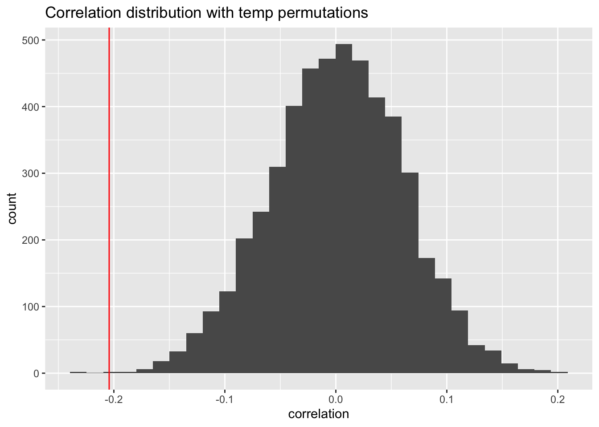

Citation: This dataset comes from the ecotourism R package, compiled by Dianne Cook, Lyn Cook, and Javad Vahdat Atashgah (2025; doi:10.32614/CRAN.package.ecotourism), and was curated by Nicola Rennie. You can access the data here. You can access the data’s handbook in the readme.
The ecotourism data tracks weather and touristic information by quarter (Q1-4) for regions in Australia defined by Tourism Research Australia and its respective Bureau of Meteorology weather station.
Research Q. + My plan: By examining Australian tourist and weather data, I test whether there is a correlation between # of trips (visiting on holiday) and temp. My null hypothesis is that there is no correlation between # of trips (visiting on holiday) and temperature. I will use the ‘tourism’ and ‘weather’ datasets information on # of trips and temps, respectively. I will take the average temperature of each of the 1-4 quarters reported day-to-day weather data. Then, I will join the two datasets according to corresponding to weather station ids (shared by region); year; and quarter. Finally, I will compare some initial and permuted quarterly averages from 2014-2022 alongside # of trips by taking note of their correlations, respectively.
Code
library("tidyverse")library("lubridate")tourism <- readr::read_csv('https://raw.githubusercontent.com/rfordatascience/tidytuesday/main/data/2026/2026-07-28/tourism.csv')weather <- readr::read_csv('https://raw.githubusercontent.com/rfordatascience/tidytuesday/main/data/2026/2026-07-28/weather.csv')# constructing data frame tourism_update <- tourism |>select(year, quarter, purpose, trips, ws_id, region) |>filter(!is.na(ws_id)) |>filter(purpose =="Holiday") weather_update <- weather |>select(ws_id, date, year, month, day, weekday, dayofyear, temp, min, max) |>mutate(quarter =quarter(date)) |>select(ws_id, year, quarter, temp) |>group_by(ws_id, year, quarter) |>summarize(temp =mean(temp))weather_tourism <-full_join(tourism_update, weather_update, by =c("ws_id", "year", "quarter")) |>filter(!is.na(temp), !is.na(region)) # plotting original dataweather_tourism |>ggplot(aes(x = temp, y = trips)) +geom_point() +geom_smooth(method ="lm", color ="red", se =FALSE) +labs(title ="Correlation between trips and temp" )

Description of first graph: This scatter plot maps the relation between trips and temp for various regions in Australia. Notice that there’s a downward trend along the line of best fit (red line), representing the correlation, -0.2042304; as temps increase, trips decrease. Though, this graph demonstrates a weak relation as there’s little clustering around the line of best fit. A majority of clustering happens around 0 trips, as well as some clustering above the correlation. Nonetheless, we can conclude from this graph, some relation between trips and temp, albeit not an uptick, rather a downtick.
Code
library("tidyverse")library("lubridate")# setting seedset.seed(47)# randomize temp data; simulation; travel_temp functiontravel_temp <-function(rep, data) { data |>select(trips, temp) |>mutate(temp_perm =sample(temp)) |>summarize(obs_r =cor(trips, temp),perm_r =cor(trips, temp_perm),rep = rep )} # map using travel_temp functionweather_tourism_perm_result <-map(c(1:5000), travel_temp, data = weather_tourism) |>list_rbind()# ggplot: mapping (a histogram)weather_tourism_perm_result |>ggplot(aes(x = perm_r)) +geom_histogram() +geom_vline(aes(xintercept = obs_r), color ="red") +labs(title ="Correlation distribution with temp permutations",x ="correlation",y ="count" )

Code
# p valueweather_tourism_perm_result |>summarize(p_val =mean(abs(perm_r) >=abs(obs_r)))
# A tibble: 1 × 1
p_val
<dbl>
1 0.0006
Description of simulation: My simulation randomizes temp data (within range of initial weather data frame) and is stored in a column, temp_perm. My travel_temp function equips these randomized temps by taking correlation between # of trips and temp (both initial and permuted) per some # of reps put into the function’s arguments. By mapping the travel_temp function, I aimed to process correlations some rep number of times (I used 5,000 for the purposes of this project), iterating enough times to analyze if my initial results happened by some random chance. Notice, my function reconfigures a data frame; it selects for trips, temp, and rep. Through this reconfiguration, I can map my function by assigning a given data frame; the function processes some column of numbers (given by the map) as inputs to function. This process is what computes the correlations to find the distribution!
Description of second graph: This histogram shows the distribution of correlations between trip and temp permutations. The vertical redline represents the correlation of the initial data: -0.2042304. Notice the red-line does not fall near the majority clustering of correlations at and around 0. Rather, it sits among a very marginal # of temp permutations with similar correlations. Its positioning among the data suggests that it is unlikely the initial data’s correlation would have happened by chance, randomness. This is also demonstrated by the p value = 0.0006; the p value demonstrates how rare, yet still possible as demonstrated by the small bar to the left of the red-line, random chance would be.
Analysis + My thoughts: By analyzing our initial correlation and 5000 correlations among permuted temperature values, I inferred that it’s unlikely our initial correlation happened by random chance. Additionally, notice that our p value, the proportion of permuted correlations which are equal to or greater than our initial correlation value (from 0), calculation is 0.0006, which is < 0.01, suggesting that there’s strong evidence against my initial null hypothesis which claimed: there is no correlation between # of trips (visiting on holiday) and temperature. Thus, I do claim it is likely there is some relationship between the # of trips and temperature. In fact, the initial correlation is around -0.2 which signals that the # of trips may decrease slightly relative to higher temperatures. Though, I do not claim with certitude that temperature causes a change in the # of trips. With regard to population, my data results are regarding # of quarterly holiday trips and average temps across respective regions.
Source Code
---title: "Project 3: Tourism and Weather Analysis"subtitle: "last updated: November 5, 2026"author: "Isaiah Moliga-Puletasi"format: html: code-fold: true code-tools: trueexecute: warning: false message: false---Citation: This dataset comes from the ecotourism R package, compiled by Dianne Cook, Lyn Cook, and Javad Vahdat Atashgah (2025; [doi:10.32614/CRAN.package.ecotourism](https://doi.org/10.32614/CRAN.package.ecotourism)), and was curated by Nicola Rennie. You can access the data [here](https://github.com/rfordatascience/tidytuesday/tree/main/data/2026/2026-07-28). You can access the data's handbook in the [readme](https://github.com/rfordatascience/tidytuesday/blob/main/data/2026/2026-07-28/readme.md). The ecotourism data tracks weather and touristic information by quarter (Q1-4) for regions in Australia defined by Tourism Research Australia and its respective Bureau of Meteorology weather station. Research Q. + My plan: By examining Australian tourist and weather data, I test whether there is a correlation between # of trips (visiting on holiday) and temp. My null hypothesis is that there is no correlation between # of trips (visiting on holiday) and temperature. I will use the 'tourism' and 'weather' datasets information on # of trips and temps, respectively. I will take the average temperature of each of the 1-4 quarters reported day-to-day weather data. Then, I will join the two datasets according to corresponding to weather station ids (shared by region); year; and quarter. Finally, I will compare some initial and permuted quarterly averages from 2014-2022 alongside # of trips by taking note of their correlations, respectively. ```{r}library("tidyverse")library("lubridate")tourism <- readr::read_csv('https://raw.githubusercontent.com/rfordatascience/tidytuesday/main/data/2026/2026-07-28/tourism.csv')weather <- readr::read_csv('https://raw.githubusercontent.com/rfordatascience/tidytuesday/main/data/2026/2026-07-28/weather.csv')# constructing data frame tourism_update <- tourism |>select(year, quarter, purpose, trips, ws_id, region) |>filter(!is.na(ws_id)) |>filter(purpose =="Holiday") weather_update <- weather |>select(ws_id, date, year, month, day, weekday, dayofyear, temp, min, max) |>mutate(quarter =quarter(date)) |>select(ws_id, year, quarter, temp) |>group_by(ws_id, year, quarter) |>summarize(temp =mean(temp))weather_tourism <-full_join(tourism_update, weather_update, by =c("ws_id", "year", "quarter")) |>filter(!is.na(temp), !is.na(region)) # plotting original dataweather_tourism |>ggplot(aes(x = temp, y = trips)) +geom_point() +geom_smooth(method ="lm", color ="red", se =FALSE) +labs(title ="Correlation between trips and temp" )```Description of first graph: This scatter plot maps the relation between trips and temp for various regions in Australia. Notice that there's a downward trend along the line of best fit (red line), representing the correlation, -0.2042304; as temps increase, trips decrease. Though, this graph demonstrates a weak relation as there's little clustering around the line of best fit. A majority of clustering happens around 0 trips, as well as some clustering above the correlation. Nonetheless, we can conclude from this graph, some relation between trips and temp, albeit not an uptick, rather a downtick. ```{r}library("tidyverse")library("lubridate")# setting seedset.seed(47)# randomize temp data; simulation; travel_temp functiontravel_temp <-function(rep, data) { data |>select(trips, temp) |>mutate(temp_perm =sample(temp)) |>summarize(obs_r =cor(trips, temp),perm_r =cor(trips, temp_perm),rep = rep )} # map using travel_temp functionweather_tourism_perm_result <-map(c(1:5000), travel_temp, data = weather_tourism) |>list_rbind()# ggplot: mapping (a histogram)weather_tourism_perm_result |>ggplot(aes(x = perm_r)) +geom_histogram() +geom_vline(aes(xintercept = obs_r), color ="red") +labs(title ="Correlation distribution with temp permutations",x ="correlation",y ="count" )``````{r}# p valueweather_tourism_perm_result |>summarize(p_val =mean(abs(perm_r) >=abs(obs_r)))```Description of simulation: My simulation randomizes temp data (within range of initial weather data frame) and is stored in a column, temp_perm. My travel_temp function equips these randomized temps by taking correlation between # of trips and temp (both initial and permuted) per some # of reps put into the function's arguments. By mapping the travel_temp function, I aimed to process correlations some rep number of times (I used 5,000 for the purposes of this project), iterating enough times to analyze if my initial results happened by some random chance. Notice, my function reconfigures a data frame; it selects for trips, temp, and rep. Through this reconfiguration, I can map my function by assigning a given data frame; the function processes some column of numbers (given by the map) as inputs to function. This process is what computes the correlations to find the distribution! Description of second graph: This histogram shows the distribution of correlations between trip and temp permutations. The vertical redline represents the correlation of the initial data: -0.2042304. Notice the red-line does not fall near the majority clustering of correlations at and around 0. Rather, it sits among a very marginal # of temp permutations with similar correlations. Its positioning among the data suggests that it is unlikely the initial data's correlation would have happened by chance, randomness. This is also demonstrated by the p value = 0.0006; the p value demonstrates how rare, yet still possible as demonstrated by the small bar to the left of the red-line, random chance would be.Analysis + My thoughts: By analyzing our initial correlation and 5000 correlations among permuted temperature values, I inferred that it's unlikely our initial correlation happened by random chance. Additionally, notice that our p value, the proportion of permuted correlations which are equal to or greater than our initial correlation value (from 0), calculation is 0.0006, which is < 0.01, suggesting that there's strong evidence against my initial null hypothesis which claimed: there is no correlation between # of trips (visiting on holiday) and temperature. Thus, I do claim it is likely there is some relationship between the # of trips and temperature. In fact, the initial correlation is around -0.2 which signals that the # of trips may decrease slightly relative to higher temperatures. Though, I do not claim with certitude that temperature causes a change in the # of trips. With regard to population, my data results are regarding # of quarterly holiday trips and average temps across respective regions.